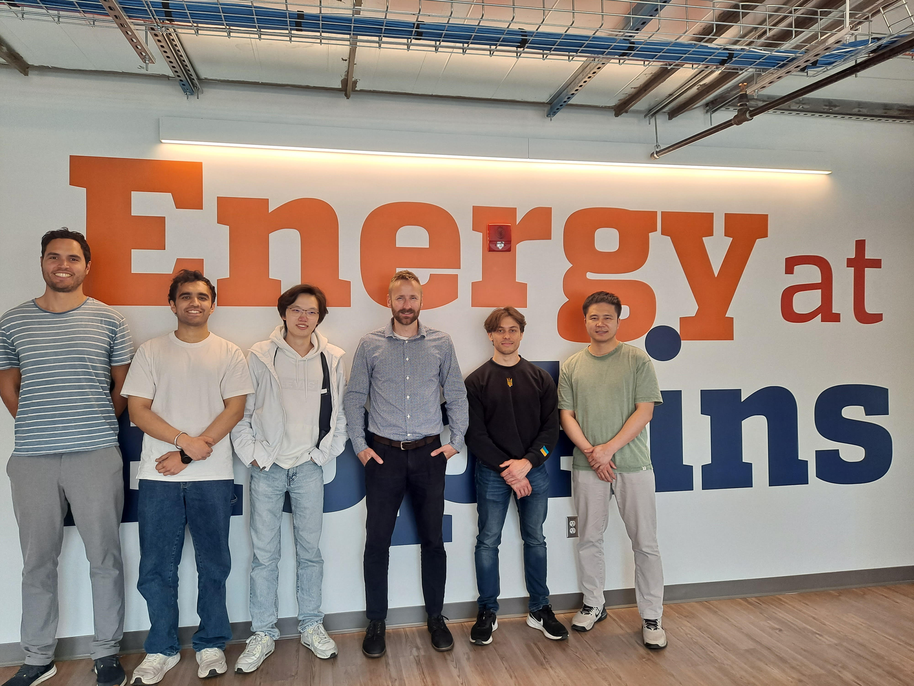

SOLARIS LAB
Scalable Optimization, Learning, And Robustness for Intelligent Systems
Innovating at the intersection of Physics, AI, and Engineering.
"Science can amuse and fascinate us all, but it is engineering that changes the world."

Latest News
📢 Poster Presentation ↗
Pietro presented the poster `CINOC: Cardinality-Invariant Neural Operator Policies for Scalable PDE Control` at ICML 2026.
📢 Tutorial ↗
Jan presented the tutorial `Scientific Machine Learning for Modeling, Optimization, and Control`at L4DC 2026.
👋 Welcome New PhD Student
Welcome to Nima, who just joined the lab as new PhD students.
📢 Invited Talk
Jan gave an invited lecture at the Workshop on AI for Modeling, Control, and Optimization of Partial Differential Equations during the American Control Conference (ACC) in New Orleans.
📢 Poster Presentation
Honghui presented the research poster `NOIR: A MINLP Solver using Neural Overparameterization for Integer Representation` at the University of Connecticut - Stamford.
📢 Invited Talk
Jan was a speaker for the Bose research seminar series (online).
📢 Workshop Organization
Jan organized a workshop on Physics-Informed Learning for Modeling, Optimization, and Control of Cyber-Physical Systems at the Cyber-Physical Systems and Internet-of-Things (CPS-IoT) Week in France.
📢 Invited Talk
Jan presented an invited seminar to the Applied Math Department at the University of California, Santa Barbara.
📄 Liang's Paper Accepted to L-CSS ↗
Congrats to Liang for his paper `Fixed-time-stable ODE Representation of Lasso` accepted to L-CSS!
📢 Invited Talk
Honghui held the invited talk at INFORMS Optimization Society Conference for Accelerating Underground Pumped Hydro Energy Storage Scheduling with Decision-Focused Learning at session Machine Learning for Global Optimization.
👋 Welcome Visiting Grad Student
Welcome to Leandro von Krannichfeldt, visiting our lab from EPFL.
🏆 1st Place Tesseract Hackathon 2025 ↗
Congratulations to Honghui, Dibakar, and Pietro for the 1st position in the Tesseract Hackathon 2025.
👋 Welcome New Postdoc
Welcome to Liang, who just joined the lab as a new Postdoc.
👋 Welcome New Postdoc
Welcome to Parv, who just joined the lab as a new Postdoc.
👋 Welcome New PhD Students
Welcome to Honghui and Pietro, who just joined the lab as new PhD students.